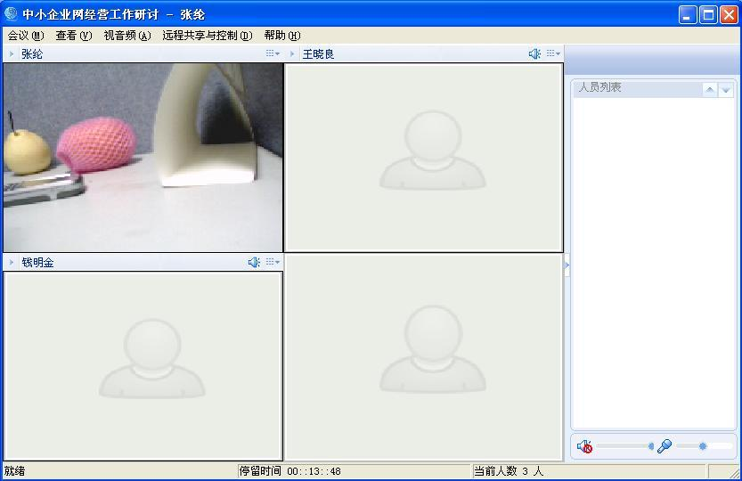

目前提供5种显示布局，默认模式，大窗口模式，2窗口模式，4窗口模式，16窗口模式。在“查看”菜单的“视频布局”选项中切换这四种窗口布局。

图1 默认模式布局
在此模式下，右键点击参会人员，在弹出菜单中选“弹出显示视频”，或双击参会人员的视频显示区域，可以弹出该用户的窗口，将该用户的窗口与会议室窗口分离显示。
弹出显示的窗口，可以在右键菜单中选择改变窗口大小，是否全屏显示，是否总在最前。

图2 大窗口模式布局

图3 2窗口模式布局

图4 4窗口模式布局

图5 16窗口模式布局
在上面三种模式下，右键点击参会人员，在弹出菜单中选“弹出显示视频”，或双击参会人员的视频显示区域，可以将该用户的窗口显示到左边的视频显示区域。如果左边的显示区域已被占满，则替换其中的第一个。
以上四种显示方式，当右侧的参会人员过多显示不下时，可以用右下角的上下滚动按钮，滚动显示。